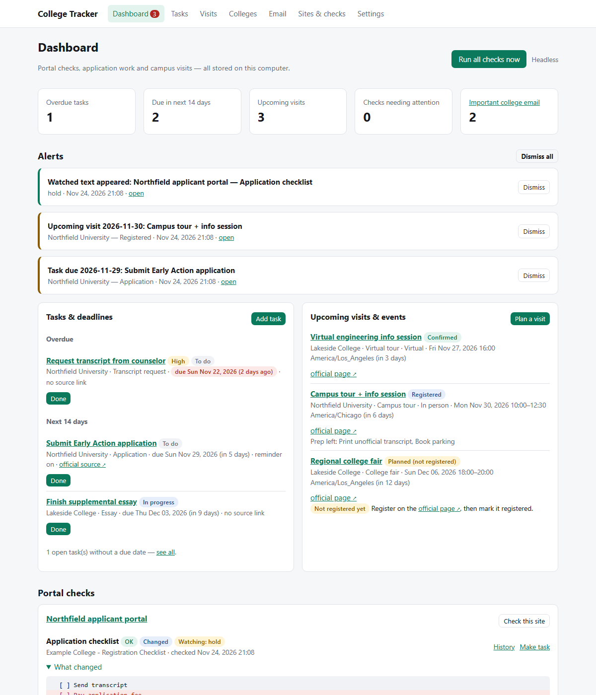

Screenshots
Dashboard and sites-management screenshots go here. Update these whenever the UI changes.


Localhost dashboard • Playwright • Flask
Logs into college portals and pulls registration-checklist data.
College Tracker is a localhost website that logs into college portals using Playwright,
navigates to registration-checklist pages, and displays the extracted data. Credentials are
stored in .env (never committed). The list of websites to check lives in
sites.json and can be managed through the web UI.
# Windows
.\setup.bat
.venv\Scripts\python run.py
# open http://127.0.0.1:5000http://127.0.0.1:5000sites.json).env (gitignored)Dashboard and sites-management screenshots go here. Update these whenever the UI changes.

college-tracker/
app.py # Flask website (localhost)
scraper.py # Playwright login + checklist extraction
run.py # Entrypoint
sites.json # Websites to log into and check (committed)
.env.example # Credential template (copy to .env, never commit)
docs/ # GitHub Pages site (this folder)
tests/ # mock HTML pages for end-to-end testing© College Tracker — localhost-only tool